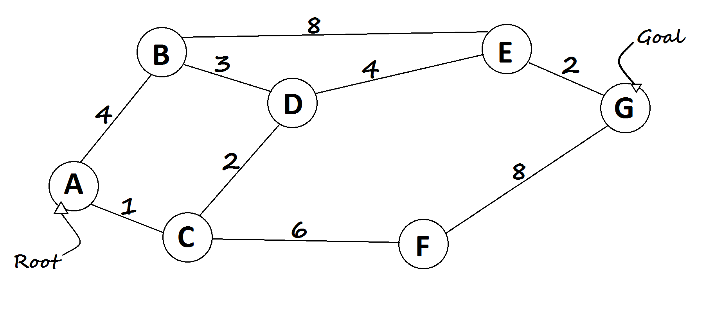

Halite PathFinding Introduction
What Is PathFinding?

- Pathfinding searches shortest route between two points
- Root: A node
- Goal: G node
Algorithms
- Dijkstra's algorithm: Using brute force
- A* algorithm: Using heuristics
Dijkstra's Pseudocode
function Dijkstra(root, goal, nodes)
openSet := [nodes]
cameFrom := []
gScore := [] with default value of Infinity
gScore[root] := 0
while openSet is not empty
current := node in openSet with the lowest gScore[]
if current = goal
return reconstruct_path(cameFrom, current)
openSet.Remove(current)
for each neighbor of current
if neighbor not in openSet
continue
temp := gScore[current] + d(current, neighbor)
if temp < gScore[neighbor]
gScore[neighbor] := temp
cameFrom[neighbor] := current
return failure
Initialization
root = A
goal = G
openSet = [A,B,C,D,E,F,G]
cameFrom = [-,-,-,-,-,-,-]
gScore = [0,inf,inf,inf,inf,inf,inf]
Iteration 1
current = A
openSet = [B,C,D,E,F,G]
childs of A:
B --> temp = 0 + 4 = 4 < inf
gScore = [0,4,inf,inf,inf,inf,inf]
cameFrom = [-,A,-,-,-,-,-]
C --> temp = 0 + 1 = 1 < inf
gScore = [0,4,1,inf,inf,inf,inf]
cameFrom = [-,A,A,-,-,-,-]
Iteration 2
current = C
openSet = [B,D,E,F,G]
childs of C:
A --> skip
D --> temp = 1 + 2 = 3 < inf
gScore = [0,4,1,3,inf,inf,inf]
cameFrom = [-,A,A,C,-,-,-]
F --> temp = 1 + 6 = 7 < inf
gScore = [0,4,1,3,inf,7,inf]
cameFrom = [-,A,A,C,-,C,-]
Iteration 3
current = D
openSet = [B,E,F,G]
childs of D:
B --> temp = 3 + 3 = 6 < 4
C --> skip
E --> temp = 3 + 4 = 7 < inf
gScore = [0,4,1,3,7,7,inf]
cameFrom = [-,A,A,C,D,C,-]
Iteration 4
current = B
openSet = [E,F,G]
childs of B:
A --> skip
D --> skip
E --> temp = 4 + 8 = 12 < 7
Iteration 5
current = F
openSet = [E,G]
childs of F:
C --> skip
G --> temp = 7 + 8 = 15 < inf
gScore = [0,4,1,3,7,7,15]
cameFrom = [-,A,A,C,D,C,F]
Iteration 6
current = E
openSet = [G]
childs of E:
B --> skip
D --> skip
G --> temp = 7 + 2 = 9 < 15
gScore = [0,4,1,3,7,7,9]
cameFrom = [-,A,A,C,D,C,E]
Iteration 7
current = G
cameFrom = [-,A,A,C,D,C,E]
Cost = 9
Path = A-C-D-E-G
function reconstruct_path(cameFrom, current)
total_path := {current}
while current in cameFrom.Keys:
current := cameFrom[current]
total_path.prepend(current)
return total_path
Example Animation

A* Pseudocode
function A_Star(root, goal, h)
openSet := [root]
closedSet := []
cameFrom := []
gScore := [] with default value of Infinity
gScore[root] := 0
fScore := [] with default value of Infinity
fScore[root] := h(root)
while openSet is not empty
current := node in openSet with the lowest fScore[]
if current = goal
return reconstruct_path(cameFrom, current)
openSet.Remove(current)
closedSet.Add(current)
for each neighbor of current
if neighbor in closedSet
continue
temp := gScore[current] + d(current, neighbor)
if temp < gScore[neighbor]
cameFrom[neighbor] := current
gScore[neighbor] := temp
fScore[neighbor] := gScore[neighbor] + h(neighbor)
if neighbor not in openSet
openSet.add(neighbor)
return failure
Initialization
root = A
goal = G
h = [8,8,6,5,1,4]
openSet = [A]
closedSet = []
cameFrom = [-,-,-,-,-,-,-]
gScore = [0,inf,inf,inf,inf,inf,inf]
fScore = [8,inf,inf,inf,inf,inf,inf]
Iteration 1
current = A
openSet = []
closedSet = [A]
childs of A:
B --> temp = 0 + 4 = 4 < inf
cameFrom = [-,A,-,-,-,-,-]
gScore = [0,4,inf,inf,inf,inf,inf]
fScore = [8,12,inf,inf,inf,inf,inf]
openSet = [B]
C --> temp = 0 + 1 = 1 < inf
cameFrom = [-,A,A,-,-,-,-]
gScore = [0,4,1,inf,inf,inf,inf]
fScore = [8,12,7,inf,inf,inf,inf]
openSet = [B,C]
Iteration 2
current = C
openSet = [B]
closedSet = [A,C]
childs of C:
A --> skip
D --> temp = 1 + 2 = 3 < inf
cameFrom = [-,A,A,C,-,-,-]
gScore = [0,4,1,3,inf,inf,inf]
fScore = [8,12,7,8,inf,inf,inf]
openSet = [B,D]
F --> temp = 1 + 6 = 7 < inf
cameFrom = [-,A,A,C,-,C,-]
gScore = [0,4,1,3,inf,7,inf]
fScore = [8,12,7,8,inf,11,inf]
openSet = [B,D,F]
Iteration 3
current = D
openSet = [B,F]
closedSet = [A,C,D]
childs of D:
B --> temp = 3 + 3 = 6 < 4
C --> skip
E --> temp = 3 + 4 = 7 < inf
cameFrom = [-,A,A,C,D,C,-]
gScore = [0,4,1,3,7,7,inf]
fScore = [8,12,7,8,8,11,inf]
openSet = [B,F,E]
Iteration 4
current = E
openSet = [B,F]
closedSet = [A,C,D,E]
childs of E:
B --> temp = 7 + 8 = 15 < 4
D --> skip
G --> temp = 7 + 2 = 9 < inf
cameFrom = [-,A,A,C,D,C,E]
gScore = [0,4,1,3,7,7,9]
fScore = [8,12,7,8,8,11,9]
openSet = [B,F,G]
Iteration 5
current = G
cameFrom = [-,A,A,C,D,C,E]
Cost = 9
Path = A-C-D-E-G
Example Animation